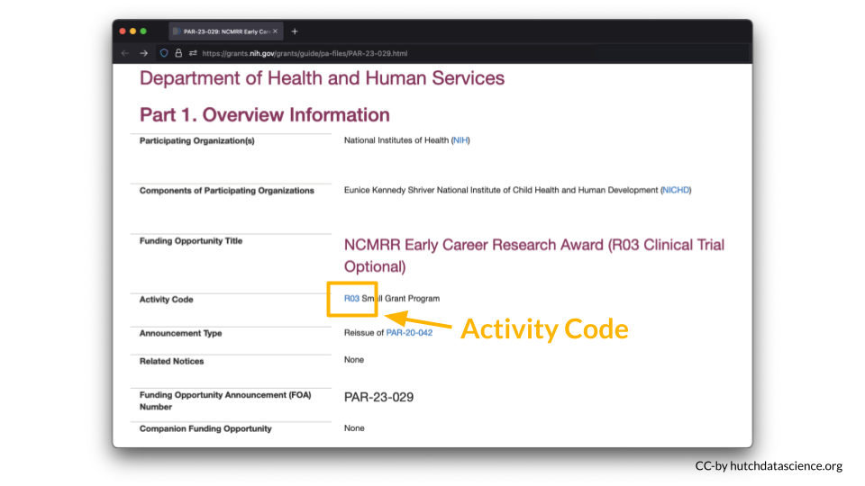
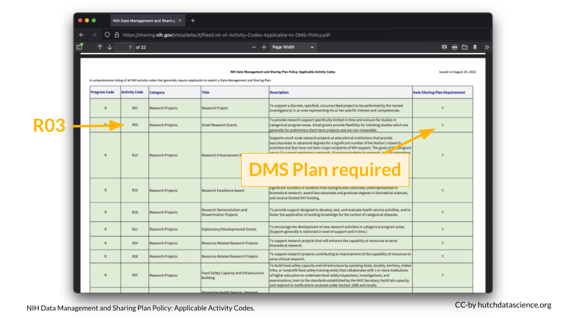
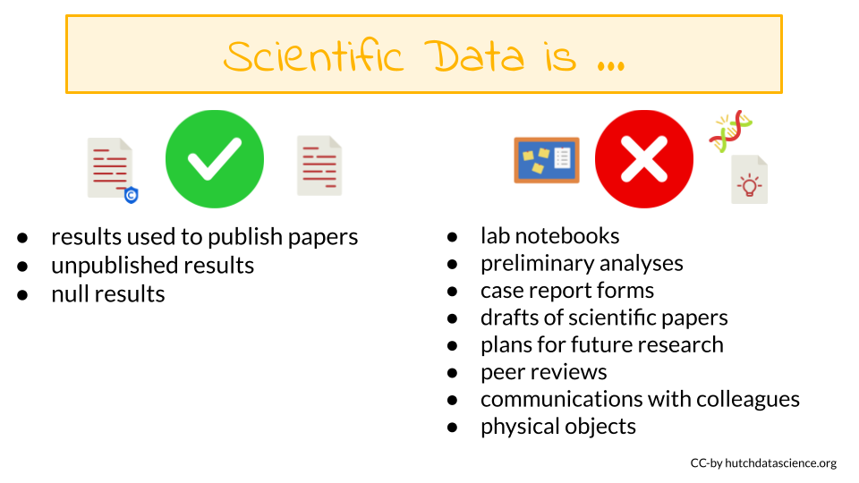

Chapter 8 Why is there an NIH DMS policy?
First we will discuss the motivations behind the new data management and sharing policy that went into effect for (most) grant proposals submitted to the NIH after January 25, 2023.
Why is the NIH doing this? There are several reasons why sharing data can be beneficial to the scientific community.
- Supports transparency - Sharing data provides more clarity about how studies are performed. Many scientists also believe in an ethical responsibility to study participants (Bauchner, Golub, and Fontanarosa 2016).
- Encourages reproducibility and rigor - Having the data accessible, allows others to try to reproduce study findings. This can further enable studies that may replicate or validate the initial findings with different data.
- Supports multi-modal work - When more data of various types are easily available it makes it easier for scientist to perform studies with multiple types of data (Thessen 2021).
- More efficient and cost effective - Some data are especially difficult or expensive to produce.By sharing this data more broadly it can save on cost and efficiency of designing new and similar studies by learning from the data already generated.
- Supports Researcher Inclusion - Data generation can be especially difficult for those at institutes with less resources. Publicly available data can therefore be used by these researchers to better enable their participation.
- Increased impact - Papers that share their data in repositories appear to be cited more based on the study by Colavizza et al. (2020) .
- Increased collaboration opportunity - Having data available can encourage other researchers to expand the research in a new direction or extend it further and they may reach out to collaborate.
- Data Citations - Due to the importance of data generation and sharing to the NIH, the culture will shift to see data as a research product that demonstrates a contribution to the scientific community.
8.1 Key terms
Data Management
The work involved with validating, organizing, protecting, maintaining, and processing scientific data to ensure the accessibility, reliability, and quality of data for use in research. All research data should be actively managed.
Data Sharing
The act of making scientific data available for use by others (e.g., the larger research community, institutions, the broader public), for example, via an established repository. Some data carry limitations on how data sharing can be done and some meet criteria that make them exempt from data sharing.
Metadata
Data that provide additional information intended to make scientific data interpretable and reusable. Metadata can include features like dates, independent sample and variable construction and description, methodology, data provenance, data transformations, any intermediate or descriptive observational variables.
Data Management and Sharing Plan
A plan describing an approach to data management, preservation, and sharing of scientific data and accompanying metadata.
#How will this policy affect me?
Whether you are an investigator applying for a NIH grant, or a researcher or trainee supported by a NIH grant, it is important to know how this policy applies to you and your work. You can refer to the NIH overview of which research will be covered by this new policy.
The major requirement of the policy is that all grant proposals (submitted after January 25th, 2023) for mechanisms that require compliance, must include a plan for how they will proactively manage and share their data.
For certain grant mechanisms for projects that do not generate data, compliance with the policy is not required. For certain types of data, sharing is not possible, and a justification will be required instead.
The following text will discuss several key questions:
- Is my research exempt from the policy?
- Does my research generate scientific data?
- Do grant renewals require compliance with the policy?
- How will the policy impact the review process?
- When do I need to share my data?
- When should I not share data?
To determine if your research requires compliance with other policies that may influence how you share your data, take this quiz.
In addition to these questions, there are ethical considerations that you may want to think about. See the ethics section of our other course for more information.
8.2 Grant Mechanisms
What grant mechanisms require compliance with the DMS policy?
The DMS Policy applies to all research that generates scientific data (regardless of the funding level), including:
- Research Projects
- Some Career Development Awards (K)
- Small Business SBIR/STTR
- Research Centers
The DMS Policy does not apply to research and other activities that do not generate scientific data, including:
- Training (T)
- Fellowships (F)
- Construction (C06)
- Conference Grants (R13)
- Resource (G)
You can look up the [NIH Activity Code in this table] to see if a DMS Plan is required](https://sharing.nih.gov/sites/default/files/flmngr/List-of-Activity-Codes-Applicable-to-DMS-Policy.pdf){target=“_blank”} for your particular grant type.
For example, I am interested in applying to a R03 award.

According to the table, a DMS Plan is required for this particular award.

8.2.1 Data-generating Research
Does my research generate scientific data?
The NIH Data Management and Sharing (DMS) Policy applies to all NIH-supported research generating scientific data. But what is “scientific data”?

8.2.1.1 Scientific data
Scientific data are the “recorded factual material of sufficient quality to validate and replicate research findings, regardless of whether the data are used to support scholarly publications”. This can include any of the following if they are applicable to your study:
- Unpublished results
- Null results
- Results used to publish papers
8.3 Grant Renewals
Do grant renewals need to comply with the policy?
If you submit a grant renewal application for any of the grants mechanisms that require compliance after January 25th, 2023, then your renewal will need to include a DMS Plan even if the grant was originally funded before January 25th, 2023.
8.4 Impact on Reviews
How will this influence the grant review process?
For most proposals – those where data sharing is not part of the Notice of Funding Opportunity – the following will happen during the review process:
- Reviewers for will not have access to your DMS plan.
- Reviewers will however see your budget which will include some descriptions of how money will be spent to manage and share data.
- Thus, the DMS plan should not influence your grant score.
- After a grant receives a fundable score, a Program Officer will review the DMS plan and will work with the PI to address any concerns. Changes based on this process can be made during the Just-in-Time procedures.
For proposals where data sharing is specified as part of the Notice of Funding Opportunity the following will happen during the review process:
- The reviewers will have access to the plan and it may be part of the review criteria.
- Program staff will also review the DMS plan.